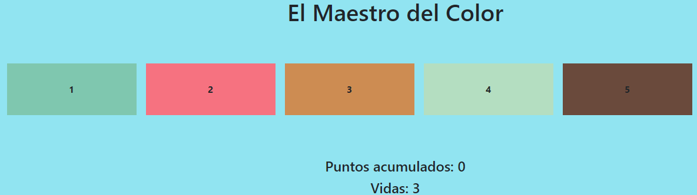
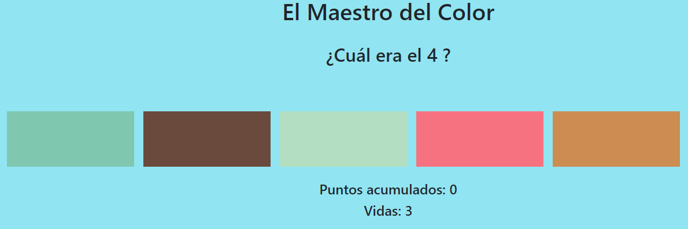

¡Hola! 👋 Soy Francisco, estudiante de programación del último año en la UTN.
👾 Me apasiona el desarrollo web Full Stack y actualmente estoy trabajando en mejorar mis habilidades en .NET, React y Angular.
🔭 Actualmente me estoy enfocando en el desarrollo web Full Stack.
🌱 Me encuentro trabajando con .NET, Angular y Oracle ofreciendo servicios de software.
💪 Soy un apasionado de los desafíos lúdicos.
Contactate conmigo a través de LinkedIn o escribime a franallende2000@gmail.com.
Tutorial del juego propio "El Maestro del Color"
¡Bienvenido al tutorial del juego "El Maestro del Color"! En este juego, vas a poner a prueba tu memoria visual y tu capacidad para identificar colores. Acá te explicamos cómo jugar:
Reglas del juego:
- El juego mostrará una secuencia de colores durante 3 segundos.
- Después de la secuencia, los colores se ocultan y se desordenan.
- Se te preguntará cuál era el número del color que se mostró en la secuencia.
- Si adivinas correctamente, ganas puntos y se repete el ciclo con una nueva secuencia de colores.
- Si te equivocas, perdes una vida y un punto. Tenes un total de 3 vidas.
- El juego continuará hasta que pierdas todas tus vidas.
Cómo jugar:
Para seleccionar tu respuesta, simplemente hace clic en el color que creas que corresponde al número mostrado en la secuencia. Si acertas, ganás puntos; de lo contrario, perdes una vida y un punto.
